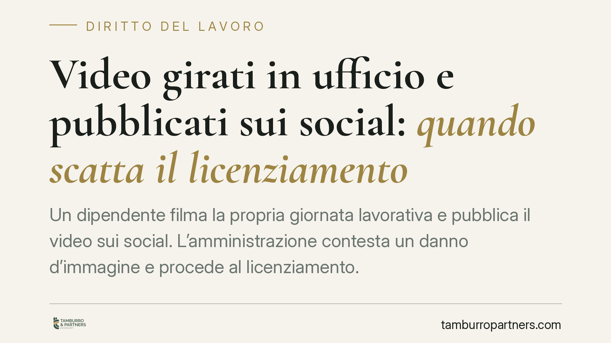

Video girati in ufficio e pubblicati sui social: quando scatta il licenziamento
Un dipendente filma la propria giornata lavorativa e pubblica il video sui social. L'amministrazione contesta un danno d'immagine e procede al licenziamento. Il tema torna al centro dell'attenzione dopo una recente pronuncia di merito. Capire quando la condotta e' davvero sanzionabile richiede un bilanciamento preciso tra tutela del datore e diritti del lavoratore.

Il fatto
Un dipendente pubblico pubblica sui social network alcuni video girati all'interno del proprio ufficio. L'amministrazione ritiene che i contenuti ledano la propria immagine e avvia il procedimento disciplinare, concluso con il licenziamento. Una recente pronuncia di merito ha riaperto il dibattito su un punto tutt'altro che scontato: filmare il luogo di lavoro e diffonderne le immagini non equivale, di per se', a una condotta che legittima il recesso.
La questione tocca contemporaneamente tre piani: il potere disciplinare del datore, la liberta' di manifestazione del pensiero del lavoratore e la riservatezza dei terzi eventualmente ripresi.
Inquadramento normativo
Nel lavoro privato, il licenziamento per giusta causa trova fondamento nell'art. 2119 cod. civ.: la giusta causa e' quel comportamento cosi' grave da non consentire la prosecuzione, nemmeno provvisoria, del rapporto. E' una clausola generale, che il giudice riempie di contenuto caso per caso.
Nel pubblico impiego la disciplina e' piu' articolata. L'art. 55-quater del d.lgs. 165/2001 tipizza alcune ipotesi di licenziamento disciplinare. Tra queste rileva, in particolare, la condotta che arreca grave danno all'immagine dell'amministrazione: non ogni esposizione sui social, dunque, ma solo quella che integra un pregiudizio serio e dimostrabile all'ente. Le altre ipotesi tipizzate dalla norma (falsa attestazione della presenza, assenze ingiustificate, condanne penali) restano distinte e non vanno sovrapposte.
La sanzione espulsiva, in concreto, va poi raccordata con il codice disciplinare del CCNL applicabile - per gli enti locali, il CCNL Funzioni Locali 2019-2021 - che gradua le infrazioni e le relative sanzioni. Il richiamo va fatto all'articolo del contratto che disciplina specificamente le sanzioni espulsive, verificandone di volta in volta l'esatta collocazione nel testo vigente.
Il bilanciamento con liberta' di espressione e privacy
Qui si concentra il nodo interpretativo. La diffusione di contenuti sui social e' espressione del diritto garantito dall'art. 21 Cost. Il lavoratore non perde questa liberta' varcando la soglia dell'ufficio. Il licenziamento non puo' quindi colpire la critica in se', ma solo una condotta che travalichi i limiti della continenza e produca un danno concreto.
Va poi considerato il versante della riservatezza. Se nei video compaiono colleghi, utenti o dati riconoscibili, entrano in gioco la disciplina sulla protezione dei dati personali (GDPR) e il tema del consenso delle persone riprese. Diffondere immagini di terzi senza base giuridica puo' integrare una violazione autonoma, a prescindere dal giudizio sul danno all'immagine dell'ente. Si aggiunga il limite dell'art. 8 dello Statuto dei lavoratori, che vieta indagini su opinioni e aspetti non rilevanti ai fini professionali.
Quando la condotta rileva
Il giudice non valuta l'esistenza del video in astratto, ma una serie di elementi concreti:
- il contenuto: critica lecita, denuncia o, al contrario, derisione e discredito;
- la diffusione: profilo privato ristretto o pubblicazione virale a vasta platea;
- l'identificabilita': dell'ente, dei luoghi, dei colleghi o degli utenti;
- la proporzionalita': tra la condotta e la sanzione espulsiva, alla luce dei precedenti disciplinari;
- il danno effettivo: se il pregiudizio all'immagine sia dimostrato o solo ipotizzato.
Implicazioni pratiche
Per il lavoratore, il messaggio e' che il social non e' uno spazio neutro rispetto al rapporto di lavoro: un contenuto apparentemente innocuo puo' diventare oggetto di contestazione. Per il datore, in particolare pubblico, il licenziamento regge solo se sorretto da un danno serio e provato, da un procedimento disciplinare corretto e da una sanzione proporzionata. Una reazione automatica alla semplice pubblicazione rischia l'annullamento in giudizio.
Cosa fare in concreto
Se sei lavoratore:
- Verifica chi e cosa e' riconoscibile nel contenuto prima di pubblicarlo.
- Distingui la critica argomentata dal discredito gratuito: la prima e' tutelata, il secondo no.
- Acquisisci il consenso delle persone riprese o rendile non identificabili.
Se sei datore di lavoro:
- Documenta il danno all'immagine con elementi concreti, non presunti.
- Rispetta le fasi del procedimento disciplinare e valuta la proporzionalita' della sanzione rispetto al codice disciplinare applicabile.
In entrambe le posizioni, una valutazione tecnica preventiva riduce in modo sensibile il rischio di contenzioso.
Disclaimer
Contributo informativo a cura di Tamburro & Partners - Avv. Giuseppe Tamburro. Non costituisce parere legale.
Ogni storia di lavoro ha i suoi tempi.
Se gestisci HR e vuoi un confronto su contenzioso, ispezioni o licenziamenti, scrivi allo studio. Ti rispondiamo entro un giorno lavorativo.